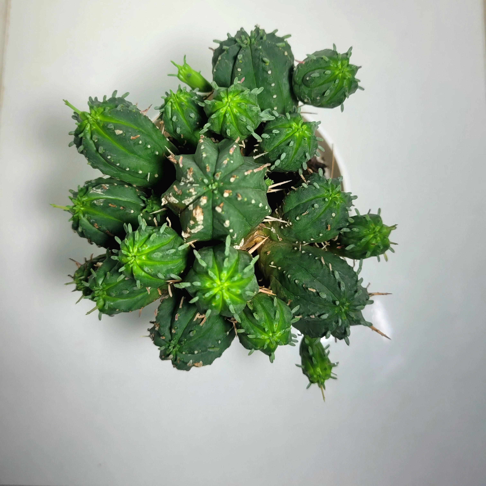
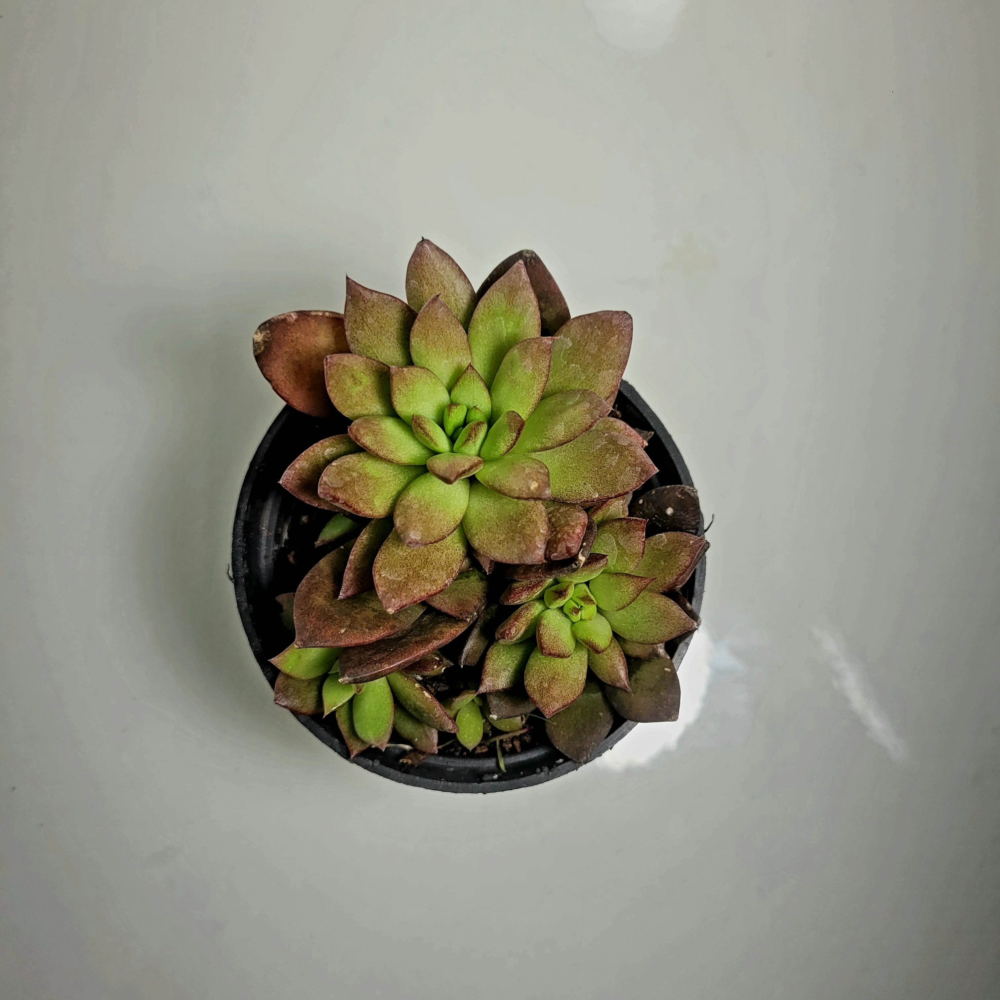
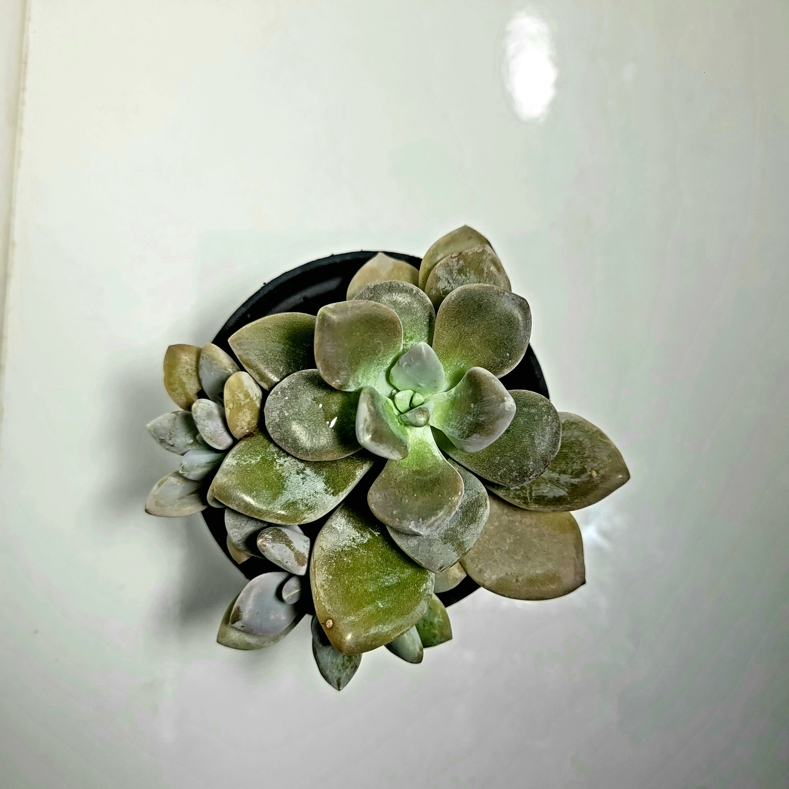
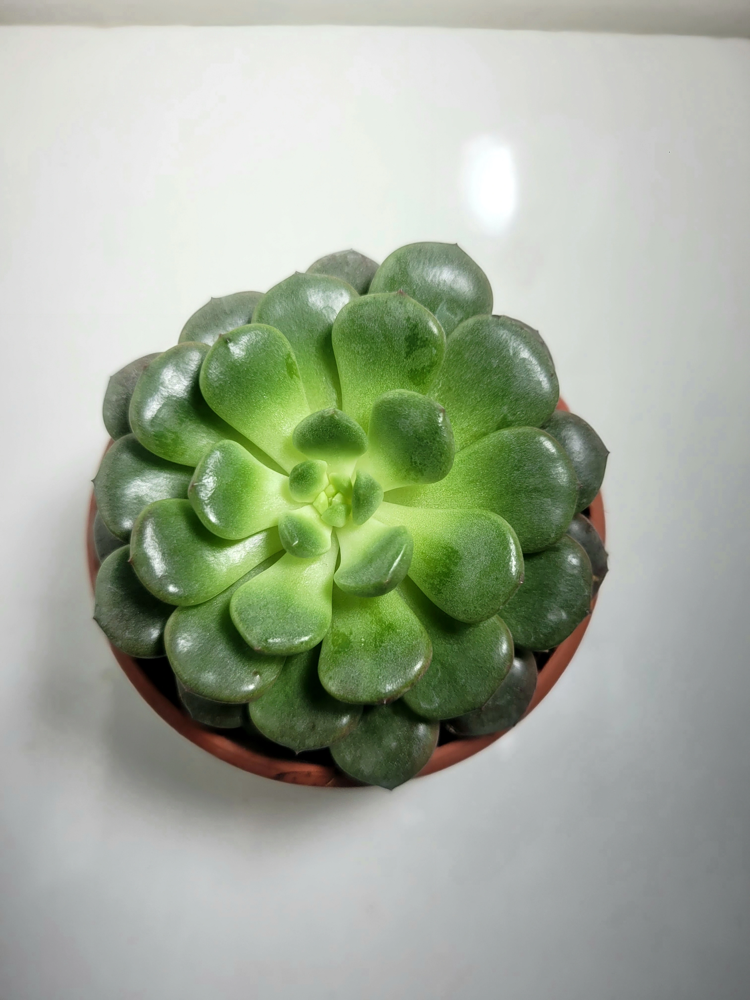
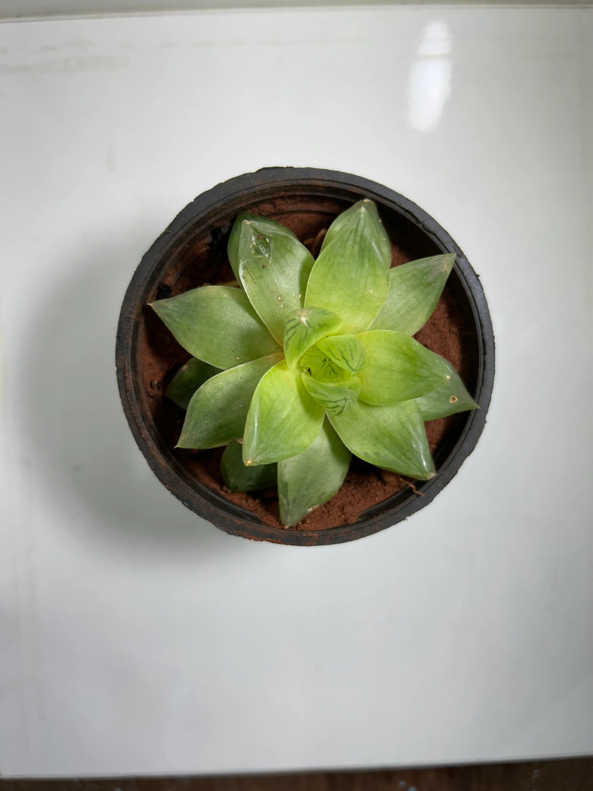
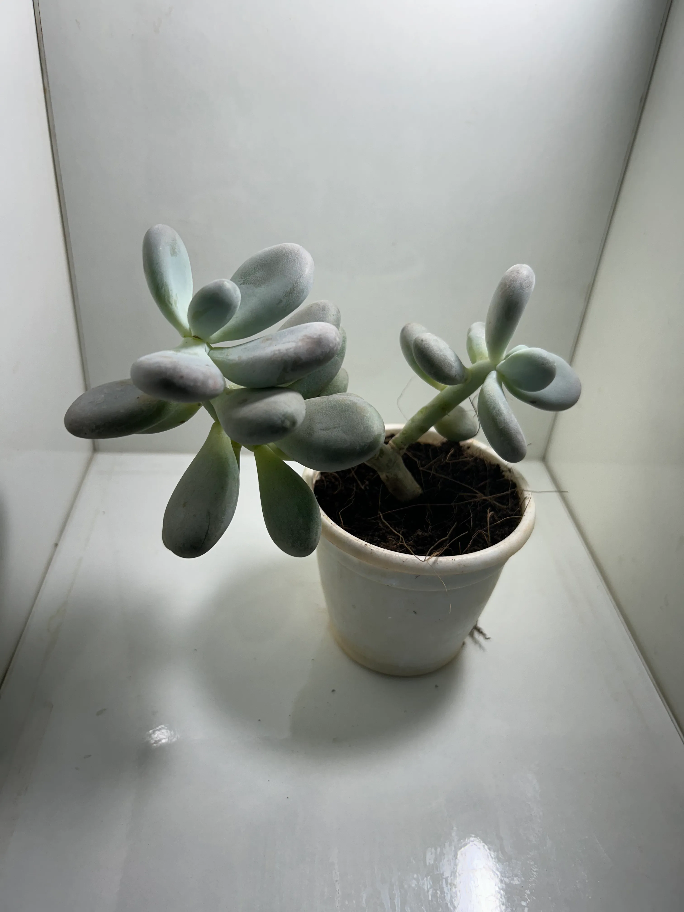
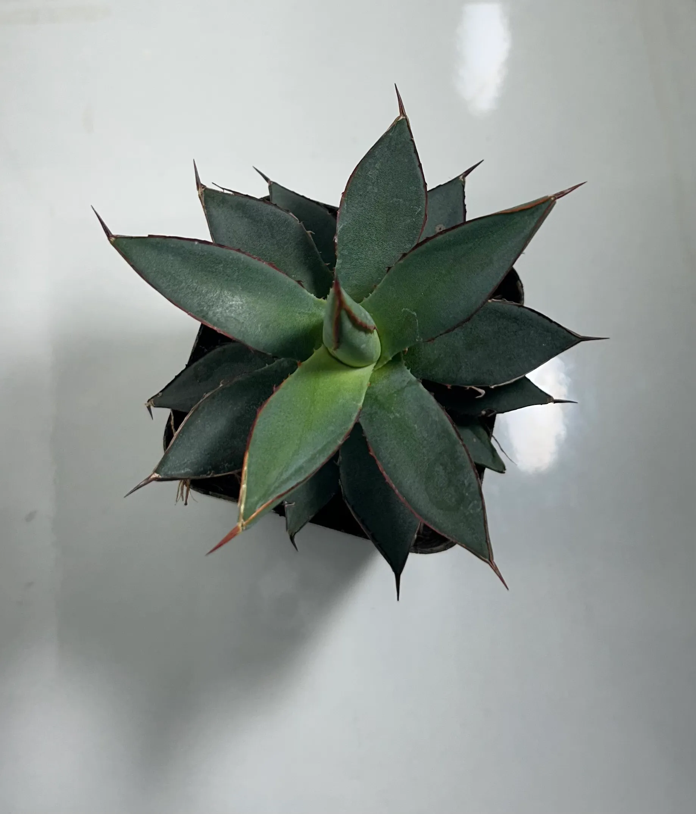
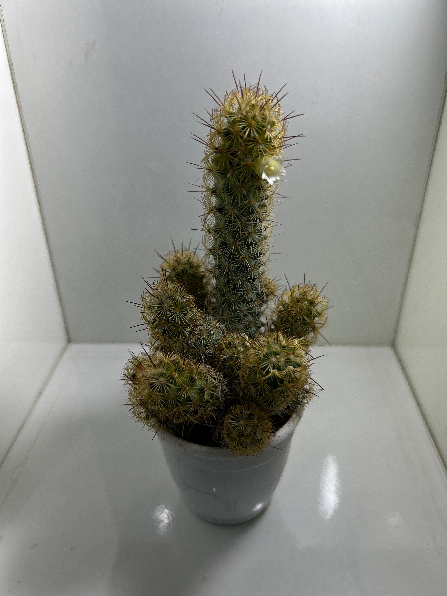
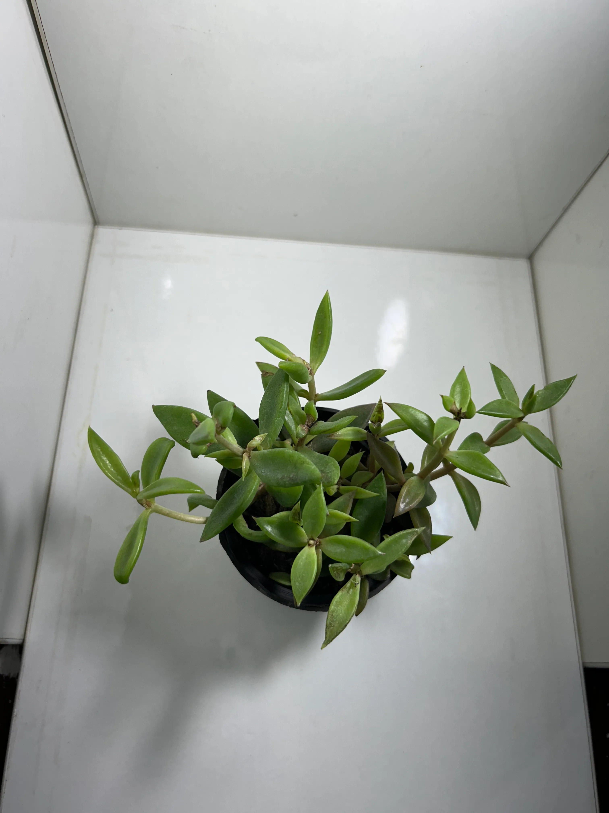
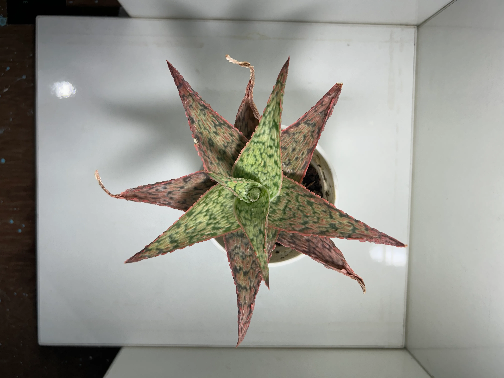

Mammillaria carmenae
Mammillaria carmenae is a small, globular cactus known for its dense covering of soft, white spines and its ability to produce beautiful pink or white flowers in a crown-like formation around the top. It is a low-maintenance plant, making it a popular choice for succulent and cactus collections.
Shop Mammillaria carmenae

Chocolate Plant 'Kalanchoe'
Kalanchoe tomentosa, commonly known as Panda Plant, features fuzzy, velvety leaves with brownish edges. It belongs to the Crassulaceae family and is categorized as a succulent plant.
Shop Kalanchoe tomentosa

Euphorbia japonica
Euphorbia japonica is a unique hybrid succulent, often mistaken for a small cactus due to its spiny, thickened stem. It is a cross between Euphorbia susannae and Euphorbia bupleurifolia, forming a caudex-like base with spiky green leaves emerging from the top.
Shop Euphorbia japonica

Pachyphytum compactum
Pachyphytum compactum, commonly known as Little Jewel, is a unique succulent with plump, geometric leaves that have a faceted appearance, resembling cut gemstones. The leaves are often green but can develop shades of purple or pink under stress.
Shop Pachyphytum compactum

Echeveria lilacina
Echeveria lilacina, commonly known as Ghost Echeveria, is a stunning rosette-forming succulent with silvery-gray, spoon-shaped leaves. It has a slow-growing nature and produces delicate pink or coral-colored flowers on tall stalks.
Shop Echeveria lilacina

Sempervivum calcareum
Sempervivum calcareum, commonly known as Houseleek or Hens and Chicks, is a hardy, rosette-forming succulent with thick, fleshy green leaves that have striking red or burgundy tips. It produces offsets (chicks) around the main rosette (hen), making it an excellent ground cover or container plant.
Shop Sempervivum calcareum

Euphorbia globosa
Euphorbia globosa is a rare and fascinating succulent known for its small, rounded, bead-like stems that form clusters, resembling a string of green pearls. It produces tiny yellow-green flowers and contains a milky sap that can be toxic if it comes into contact with skin.
Shop Euphorbia globosa

Echeveria
Echeveria is a popular genus of rosette-forming succulents known for their stunning, symmetrical foliage in a variety of colors, including green, blue, pink, and purple. These drought-tolerant plants produce bell-shaped flowers on long stalks and are commonly used in rock gardens, terrariums, and indoor decor.
Shop Echeveria

Sedum clavatum
Sedum clavatum is a beautiful trailing succulent known for its compact rosettes of bluish-green leaves that can develop pinkish edges under bright sunlight. It produces small, star-shaped white flowers and is a fast-growing, drought-tolerant plant, perfect for both containers and ground cover.
Shop Sedum clavatum

Echeveria
Echeveria is a stunning, rosette-forming succulent known for its thick, fleshy leaves that come in a variety of colors, including green, blue, pink, and purple. It is drought-tolerant, easy to care for, and produces bell-shaped flowers on tall stalks during the growing season.
Shop Echeveria

Pedilanthus (Euphorbia tithymaloides)
Pedilanthus (Euphorbia tithymaloides), also known as Zigzag Plant, is a unique succulent shrub with zigzag-shaped stems and small, colorful bracts that resemble flowers. Despite its cactus-like appearance, it belongs to the Euphorbiaceae family.
Shop Pedilanthus

Echeveria
Echeveria is a popular genus of rosette-forming succulents known for their stunning, symmetrical foliage in a variety of colors, including green, blue, pink, and purple. These drought-tolerant plants produce bell-shaped flowers on long stalks and are commonly used in rock gardens, terrariums, and indoor decor.
Shop Echeveria

Pedilanthus tithymaloides
Pedilanthus tithymaloides, commonly known as Devil's Backbone, Zigzag Plant, or Redbird Cactus, is a succulent shrub with unique zigzagging stems and colorful bracts resembling tiny flowers. It belongs to the Euphorbiaceae family.
Shop Pedilanthus tithymaloides

Echeveria 'Green Spoon'
Echeveria 'Green Spoon' is a beautiful, rosette-forming succulent with spoon-shaped, fleshy green leaves that have a slightly powdery coating. This slow-growing plant is easy to care for, making it an excellent choice for indoor and outdoor succulent arrangements.
Shop Echeveria Green Spoon

Sedum lineare
Sedum lineare, commonly known as Needle Stonecrop or Carpet Sedum, is a fast-growing, trailing succulent with slender, bright green, needle-like leaves. It is a low-maintenance, drought-tolerant plant that forms dense mats and produces small yellow star-shaped flowers in summer.
Shop Sedum lineare

Haworthia cymbiformis
Haworthia cymbiformis, commonly known as the Cathedral Window Haworthia, is a compact, rosette-forming succulent with thick, fleshy, translucent green leaves that allow light to pass through, helping with photosynthesis.
Shop Haworthia cymbiformis

Euphorbia trigona
Euphorbia trigona, commonly known as the African Milk Tree, is a fast-growing, upright succulent with thick, triangular stems and spiky ridges. It features small green leaves along its edges and can develop a reddish tint in bright sunlight.
Shop Euphorbia trigona

Mammillaria gracilis
Mammillaria gracilis, commonly known as Thimble Cactus, is a small, clump-forming cactus with delicate, white spines that give it a soft, webbed appearance. It is easy to grow, drought-tolerant, and produces tiny white or pale yellow flowers.
Shop Mammillaria gracilis

Pachyphytum oviferum
Pachyphytum oviferum, commonly known as Moonstone Succulent, is a charming, plump-leaved succulent with rounded, pastel-colored leaves in shades of blue, lavender, or pink. Its powdery, waxy coating helps it retain moisture.
Shop Pachyphytum oviferum

Agave 'Burnt Burgundy'
Agave 'Burnt Burgundy' is a stunning, compact agave hybrid known for its deep burgundy-colored leaves that darken under full sun. Its thick, pointed leaves form a symmetrical rosette, making it an excellent choice for succulent gardens and rock landscapes.
Shop Agave Burnt Burgundy

Mammillaria elongata 'Green'
Mammillaria elongata 'Green', commonly known as Ladyfinger Cactus, is a small, clumping cactus with cylindrical, green stems covered in golden or white spines. It is a low-maintenance, drought-tolerant plant that produces small pink or white flowers.
Shop Mammillaria elongata

Haworthia cooperi
Haworthia cooperi, also known as the Transparent Window Plant, is a small, rosette-forming succulent with plump, translucent green leaves that allow light to pass through for photosynthesis. This unique feature gives it a glassy, jewel-like appearance.
Shop Haworthia cooperi

Lenophyllum texanum
Lenophyllum texanum, commonly known as Texas Sedum, is a small, hardy succulent native to Texas and northern Mexico. It features fleshy, spoon-shaped green leaves that may develop a reddish or purplish hue in full sun.
Shop Lenophyllum texanum

Sedum 'Little Gem'
Sedum 'Little Gem' is a small, compact succulent known for its dense, bright green leaves that turn reddish-bronze in full sun. It is a fast-growing, low-maintenance plant that forms attractive mats.
Shop Sedum Little Gem

Aloe 'Pink Bluish'
Aloe 'Pink Bluish' is a stunning hybrid Aloe variety known for its unique blend of pink, blue, and green hues on its thick, fleshy leaves. This slow-growing succulent is drought-tolerant and thrives in well-draining soil.
Shop Aloe Pink Bluish

Haworthia retusa
Haworthia retusa, also known as the Star Cactus or Window Succulent, is a small, rosette-forming succulent with translucent, green leaves that allow light to pass through for photosynthesis. This unique feature gives it a glassy appearance.
Shop Haworthia retusa

Haworthia fasciata
Haworthia fasciata, commonly known as the Zebra Plant, is a small, slow-growing succulent with thick, dark green leaves covered in white, raised stripes. It is a low-maintenance plant, perfect for indoor spaces and small pots.
Shop Haworthia fasciata